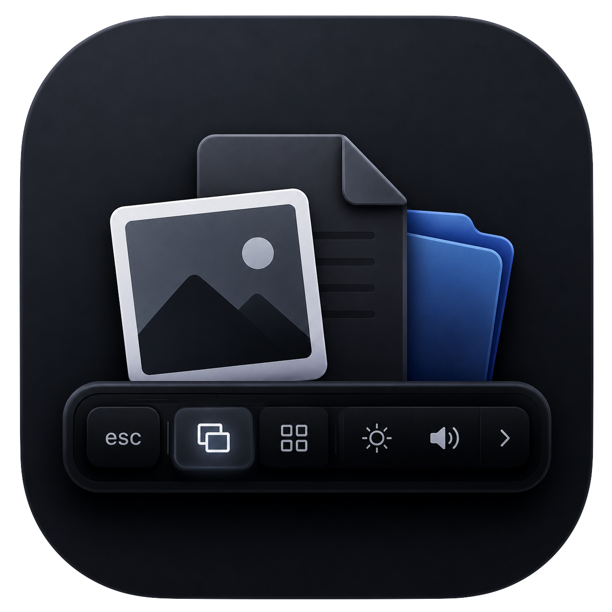
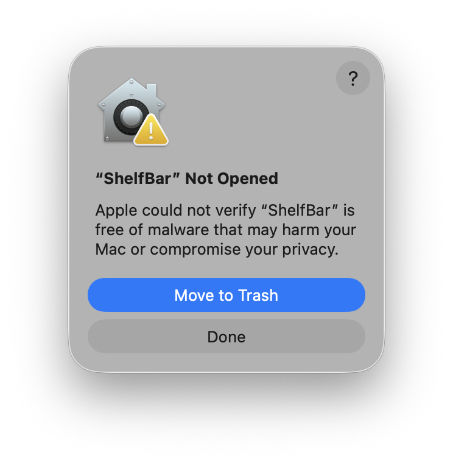

Touch Bar Drop Zone
Drop files, images, text and URLs from macOS apps into a live Touch Bar shelf, or send supported items directly to AirDrop.

ShelfBarYour Touch Bar, Your Workflow.
Turn your MacBook Touch Bar into a smart file shelf.
Drop files, images, text and URLs from macOS apps into a live Touch Bar shelf, or send supported items directly to AirDrop.
Keep files on the Touch Bar, stack them, reorder them, and drag them back out to Finder with native file copy behavior.
ShelfBar v1.0 beta is prepared for GitHub Releases. Download the DMG, open it, then drag ShelfBar to Applications.
Intel MacBook Pro models with a physical Touch Bar, running macOS 15.7 or later.
You can open the app window and settings on Macs without Touch Bar, but the main Shelf experience requires physical Touch Bar hardware.
Removing a ShelfBar-generated temporary item also removes its local temporary file. Original Finder files are never deleted.

The current beta has not yet been Apple notarized. Use System Settings → Privacy & Security → Open Anyway only if you downloaded ShelfBar from the official GitHub Release.